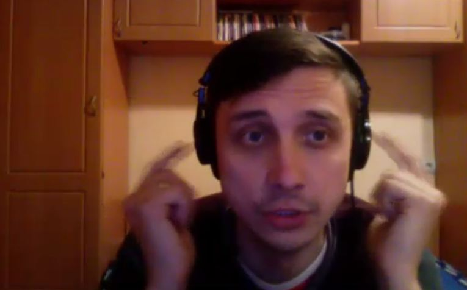
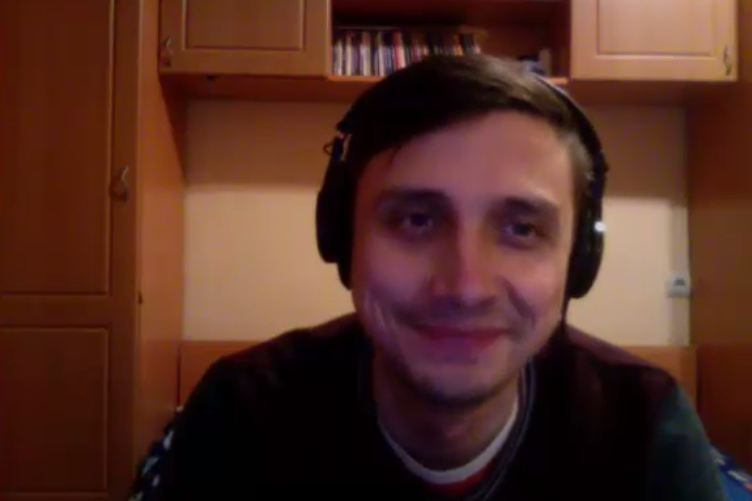
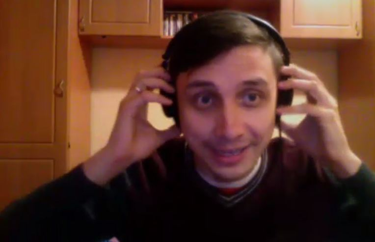
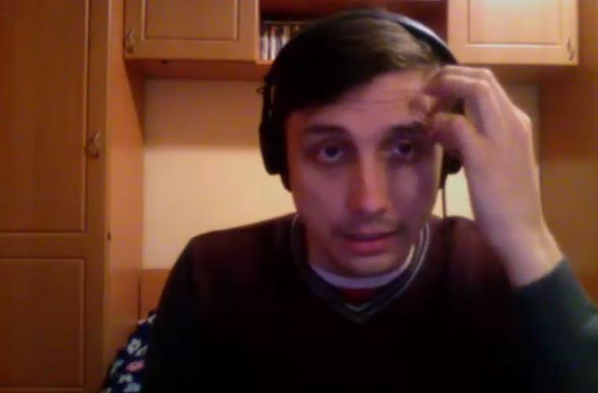

Тимур Хуснутдинов. ЕВРЕЙСКИЙ АЛЬБОМ
24.02.2014. С Тимуром беседовал Эфраим Калиш.
. . Я продолжаю публикацию серии интервью с интересными мне людьми. Все они разные и по своей творческой специальности и по образу мыслить. Их разделяют порой, большие расстояния. Но то, что их по-настоящему объединяет – жажда творчества и познания Бога. Эти беседы, записанные со скайпа, носят характер дружеского общения. Нам важно обменяться мнениями, воодушевить, ободрить друг друга, когда в этом есть нужда. Сегодня мой собеседник – рок-музыкант Тимур Хуснутдинов. Россия. Ижевск..Откровение.
Эфраим: Я бы хотел спросить тебя вот о чем: ты недавно записал еврейский альбом. Ты мог бы рассказать, что это за альбом. Как я понимаю, ты предпочитаешь рок-стиль? Ты рокер? Или как это назвать правильно?
Тимур: Верно, я – рокер до мозга костей.




Эфраим: Этот еврейский альбом, который я слышал, не совсем твой стиль? Как ты пришел к этому? Что было толчком для записи этого альбома?
Тимур: Всевышний начал открывать мне глаза на то, что Библия говорит об Израиле. Это произошло очень интересным образом. Это может показаться, будто я стараюсь представить себя каким-то супер духовным. Но я расскажу, как это было.
Помню был день. Я взял гитару, как делаю это обычно, и пошел играть пред Господом. Просто взял гитару и уединился в тайной молитвенной комнате. Я как всегда, ходил, пел. И вдруг, внутри меня родились такие слова. Я об этом никогда не думал и ни когда не думал об Израиле. Никогда я не думал об этом. Для меня Израиль, я относился к нему так: ну евреи и евреи. Вот армяне у нас еще здесь есть, татары, башкиры. И вдруг, внутри своего сердца я услышал такие слова. Представляешь, это не было физически, но это было внутри меня. Слова эти были таковы: "Если Удмуртия (Удмуртия - это республика, в которой я живу) благословит Израиль, Я благословлю Удмуртию". И всё! Вот так вот!
Я стою в шоке. И я не понимаю... Я понимаю, что республика в которой я живу, реально нуждается в благословении. Но как может Удмуртия благословить Израиль? В голове моей все перевернулось. И после этого я начал думать, размышлять, начал копать Писания.
И однажды я зашел на один мессианский сайт и прочитал поражающую новость о том, что неподалеку от Хеврона в Израиле террористами была расстреляна машина: муж с женой. И у них осталось шестеро детей.
Эфраим: да, да, я помню этот случай.
Тимур: и меня просто впечатывает в стул. И я понимаю, что внутри меня звучит как бы голос: "Начни собирать деньги для них".
В итоге, я начал собирать деньги с бизнесменов: я встречался с людьми, разговаривал с ними и они жертвовали на эту семью.
Я все это рассзказываю вкрадце. На самом деле, все это происходило несколько лет.
Работа над альбомом.
Теперь, как я пришел к этому альбому: однажды мы с группой людей поехали в Израиль (я в качестве музыканта). И мне нужно было за полтора месяца выучить тридцать песен.
Мне, как музыканту, никогда еврейские песни не нравились. Не нравились из-за их простоты и, скажем так, шансонной гармонии.
Эфраим: Это ты щедяще так говоришь? На самом деле хотел сказать - примитивной гармонии?
Тимур: Правда! Мне никогда такая музыка не нравилась.
Я начал разучивать. Пот я садился каждый день, брал компьютер, скачивал текст, отрывал в ютубе песни и начал их проигрывать. И чем больше я их пел, произносил эти слова по-еврейски и по-русски, тем больше я входил в этот материал.
И знаешь, со мной начало что-то происходить. Я просто влюбился в эти песни и понял, что хочу записать такой альбом.
Но, послушав его, ты убедишься в том, что полностью еврейским его не назовешь. Скажем так: я пропустил еврейские песни через призму своей души.
Эфраим: Мне кажется для художника это и есть цель. Я послушал то, что ты сделал. И то, что мне больше всего понравилось там, это как раз именно твое прочтение, именно та часть, где ты, как бы размышляешь над всем этим, к чему прикоснулся. Именно это и было для меня самым ценным.
В конце видео записи помещен фрагмент композиции «Атиква» в версии Тимура Хуснутдинова.
См. также другую беседу с Тимуром.
С Тимуром беседовал: Эфраим Калиш /TORAART/